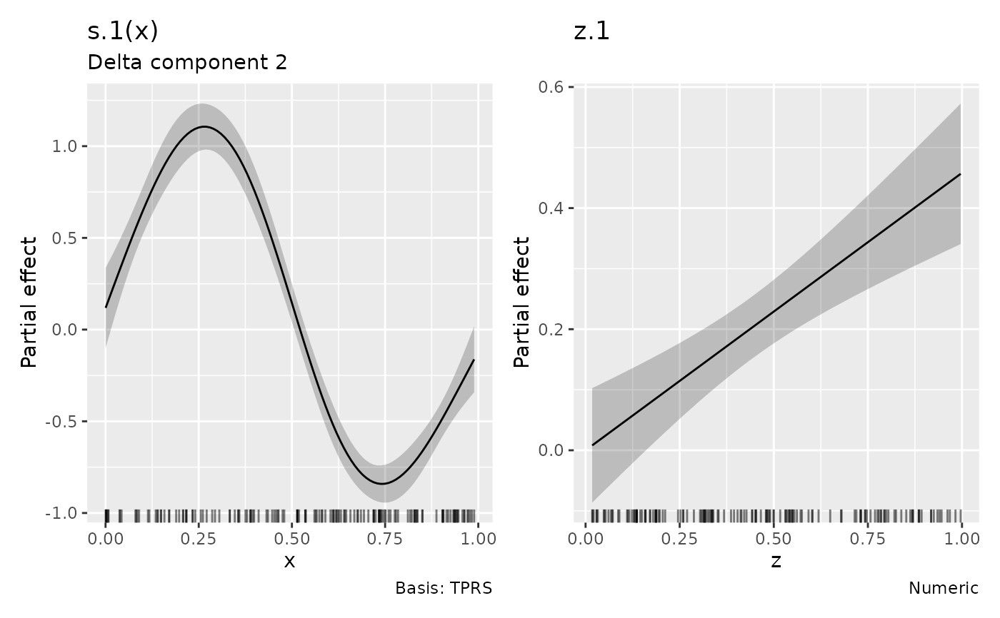

Evaluate and plot formula smooths and parametric effects from a fitted
sdmTMB model using the same plotting methods as mgcv smooths. Penalized
and unpenalized coefficients and their joint covariance are transformed
back to the constrained mgcv basis.
Usage
# S3 method for class 'sdmTMB'
smooths(object, ...)
# S3 method for class 'sdmTMB'
get_smooths_by_id(object, id, ...)
# S3 method for class 'sdmTMB'
smooth_coefs(object, select, ...)
# S3 method for class 'sdmTMB'
smooth_estimates(
object,
...,
unconditional = FALSE,
frequentist = FALSE,
envir = NULL
)
# S3 method for class 'sdmTMB'
parametric_terms(model, ...)
# S3 method for class 'sdmTMB'
parametric_effects(
object,
terms = NULL,
...,
unconditional = FALSE,
frequentist = FALSE,
envir = NULL
)
# S3 method for class 'sdmTMB'
assemble(
object,
...,
parametric = NULL,
residuals = FALSE,
unconditional = FALSE,
frequentist = FALSE,
envir = NULL,
time_varying_style = c("ribbon", "pointrange")
)
# S3 method for class 'sdmTMB'
draw(
object,
...,
parametric = NULL,
residuals = FALSE,
unconditional = FALSE,
frequentist = FALSE,
envir = NULL,
time_varying_style = c("ribbon", "pointrange")
)Arguments
- object, model
A fitted
sdmTMBmodel.- ...
Arguments passed to the corresponding gratia methods, including grid, interval, transformation, surface, styling and layout controls. For threshold terms,
nsets the number of evenly spaced evaluation points over the fitted covariate range; a fitted breakpoint within that range is also included. Supplieddatadetermines evaluation locations.- id
Integer positions of smooths across model components.
- select
Smooth selection across both predictors of delta models. Numeric and logical indices follow stored smooth order, first component then second. Character selections use
smooths()labels, such ass(x)ands.1(x)for the second component.- unconditional, frequentist
Must be
FALSE. Intervals use the joint RTMB covariance; mgcv-specific alternatives are unavailable.- envir
Optional environment for evaluating model covariates.
- terms
Parametric terms to evaluate or draw, as returned by
parametric_terms(), includingbreakpt(x)andlogistic(x)threshold terms andtime_varying(temperature)coefficient trajectories. Second-component selectors have a.1suffix.- parametric
Include parametric effects?
NULLincludes them unless smooths are selected explicitly, as fordraw.gam().- residuals
Must be
FALSE; partial residuals are not supported.- time_varying_style
Display time-varying coefficients with a line, points and uncertainty ribbon (
"ribbon", the default), or with points, interval bars and a faint connecting line ("pointrange").
Value
Smooth labels, smooth objects, coefficients, effect estimates, or
plots, as for the corresponding GAM methods. draw() returns a patchwork,
or named panels with wrap = FALSE; assemble() returns an
assembled_plots list. Models without smooths can draw parametric effects.
Details
Smooth, ordinary parametric and threshold estimates are partial contributions
on each component's link scale. Spatial, spatiotemporal, IID random effects,
offsets and varying coefficients are not added to these effects. Their
influence on coefficient uncertainty is
retained through the joint covariance. Smooth intervals include uncertainty
in their component's overall mean by default; parametric intervals include
the component's intercept. Use overall_uncertainty = FALSE for term-only
intervals. fun transforms displayed partial effects, not full predictions.
Use surface = "3d", ci_3d = TRUE in draw() or assemble() to add
interval surfaces to smooths and numeric parametric interactions in either
component. ci_3d_alpha and ci_3d_col control their opacity and fill colour.
Pass cyclic = "polar" and optional polar_args to draw() or
assemble() for polar plots of supported one-dimensional cyclic smooths.
See draw.gam() for the coordinate options.
Delta components have separate smooth and parametric coefficients and are drawn separately, with component subtitles. Upstream sdmTMB restrictions on supported bases and delta formulas still apply. Tensor smooths with multiple penalties are supported. Fits require stored smooth metadata; mapping or profiling required coefficients and non-positive-definite Hessians give errors.
Support requires sdmTMB >= 1.2.0 models fitted with the RTMB backend.
Refit older models or TMB fits with
control = sdmTMB::sdmTMBcontrol(backend = "rtmb").
Diagnostics use complete fitted predictors, including spatial, spatiotemporal
and independent group effects and offsets. Supported single-response and standard delta
families provide PIT/quantile residuals, ordinary and scalable diagnostic
plots, and joint approximate posterior predictive checks. Delta diagnostics
can select the complete response, occurrence or positive component. Raw
posterior response draws are available through posterior_samples().
By default, fields are drawn together once from their approximate posterior
and held fixed (mle-mvn), following sdmTMB's recommended residual calculation.
Checks can also hold estimates fixed, average over fitted-field uncertainty,
or simulate new fields. Marginal simulations preserve dependence and supply
residual ranks, including for nonlinear and coupled delta responses. See
diagnostic_support for treatment of coefficients, fields and covariance,
and what each check assesses.
Threshold curves are partial contributions without centring. They follow
parametric selection rules: terms selects them and parametric = FALSE
excludes them. Both delta components have separate threshold parameters.
Threshold intervals use the delta method with the joint covariance of
the fitted parameters, including uncertainty in the breakpoint or logistic
width. By default they include intercept uncertainty and its covariance
with the curve, without adding the intercept to the estimated contribution.
Use overall_uncertainty = FALSE for term-only uncertainty. At the
breakpoint, the derivative is taken from the constant side, matching native
sdmTMB prediction. Threshold intervals remain pointwise when simultaneous
smooth bands are requested. Rugs show fitting observations.
Time-varying coefficients are plotted at their stored time steps, including
extra_time; n does not add time steps. Select each fitted design column
with a label such as time_varying(temperature) or
time_varying(Intercept). A covariate named Intercept is distinguished
from the intercept by backticks: time_varying(`Intercept`).
Factor contrasts, transformations and interactions
retain the fitted coefficient coding. For rw, estimates are the temporal
coefficients. For rw0 and ar1, the matching ordinary coefficient is added
to its temporal deviation. Their joint covariance includes the variance of
both parts and their covariance. An absent ordinary coefficient contributes
zero. Matching columns must have compatible coding in the main and temporal
designs. Default effects omit ordinary terms whose coefficients are already
included in trajectories; their ordinary selectors remain available for
explicit requests. overall_uncertainty governs ordinary partial effects;
temporal panels always retain their complete coefficient covariance.
Temporal intervals remain pointwise when simultaneous smooth bands are
requested. Supplied data selects stored time steps if it contains the
model's time column; otherwise all stored times are retained. Missing or
unknown requested times give an error. sdmTMB 1.2.0 requires numeric time
values for time-varying processes.
Time-varying estimates from parametric_effects() use .type = "time_varying", .value for time, .partial for the full coefficient,
and .se for its standard error. Both display styles are also available
through draw.parametric_effects(), including nested saved estimates.
Smooth extraction and effect plots do not support dispersion formulas, other multi-predictor families, or nonlocal effects. Spatial fields and group random effects are not plotted.
Examples
if (requireNamespace("sdmTMB", quietly = TRUE)) {
library("mgcv")
set.seed(42)
d <- data.frame(x = runif(150), z = runif(150))
d$y <- 1 + sin(6 * d$x) + 0.5 * d$z + rnorm(150, sd = 0.3)
m <- sdmTMB::sdmTMB(y ~ z + s(x, k = 6), data = d, spatial = "off")
draw(m)
smooth_estimates(m, select = "s(x)")
assemble(m)
if (requireNamespace("ggcube", quietly = TRUE)) {
surface <- sdmTMB::sdmTMB(y ~ s(x, z, k = 8), data = d, spatial = "off")
draw(surface, surface = "3d", ci_3d = TRUE, n_2d = 15)
}
d$y <- ifelse(runif(150) < 0.3, 0, exp(d$y))
delta <- sdmTMB::sdmTMB(y ~ z + s(x, k = 6),
data = d,
spatial = "off", family = sdmTMB::delta_gamma()
)
draw(delta)
draw(delta, select = "s.1(x)", parametric = TRUE, terms = "z.1")
}
